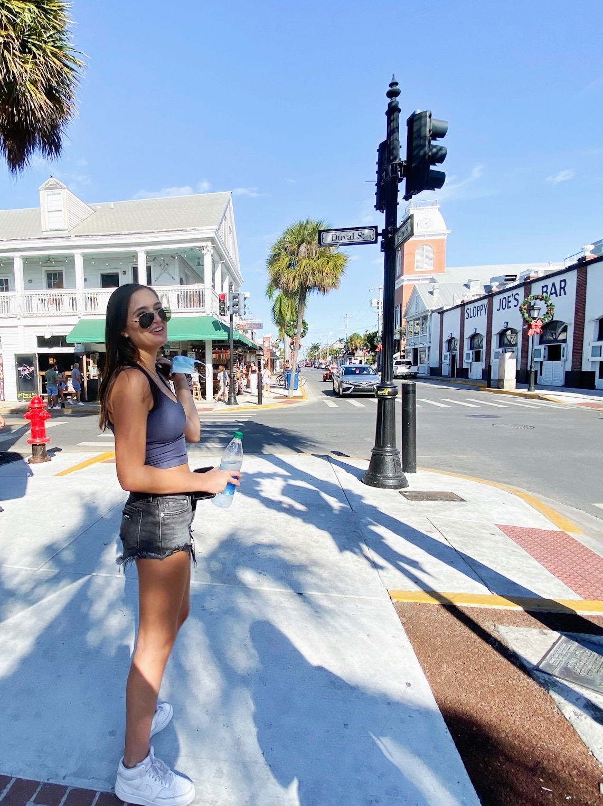
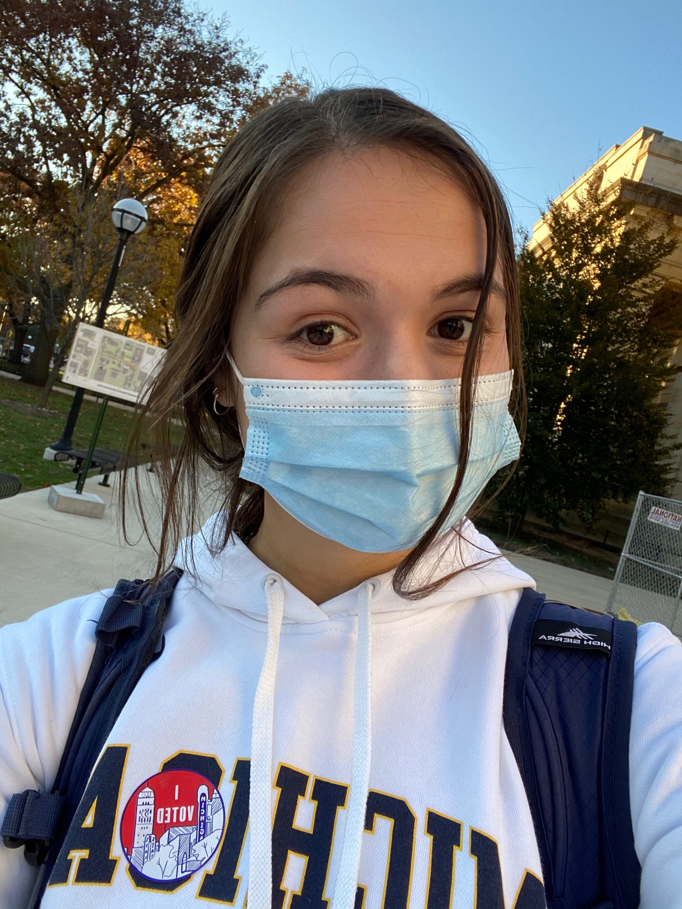

I am a passionate information science major, hoping to further develop my knowledge of information environments and data science.
I am a Sophomore at the University of Michigan-Ann Arbor currently in the school of Information, focusing on Information Analysis. I am pursuing an Information Science major and a minor in food studies. Outside of class, I am involved in the University's FinTech club, serving as VP Ritual of my sorority, Alpha Chi Omega, and tutoring high-school students from minority backgrounds for the AP Computer Science Principles exam. When I'm not partaking in any of these activities, I love to cook, workout, and go on long walks throughout Ann Arbor.
Some of my relevant coursework includes SI 339: Web Design, Development and Acessibility, SI 206: Data-Oriented Programming, and Statistics 250: Introduction to Statistics and Data Analysis. I am proficient in Python, HTML, CSS, Processing, SQL, and R. Additionally, this Winter I recieved 2021 University Honors and am a James B. Angell Scholar.
Now that I've told you a little about myself, feel free to reach out and contact me with any questions and take a look at some of my past work!
 